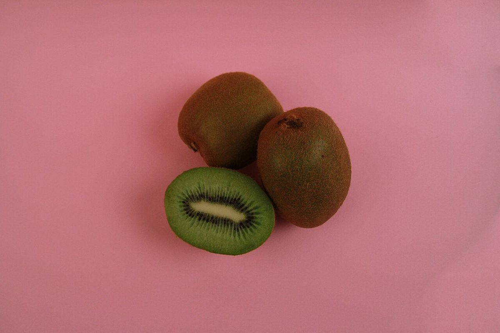
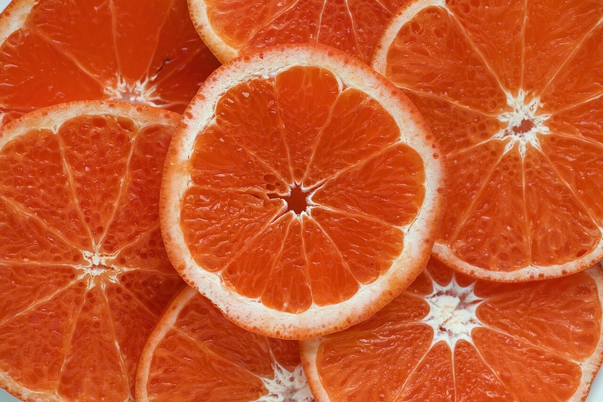
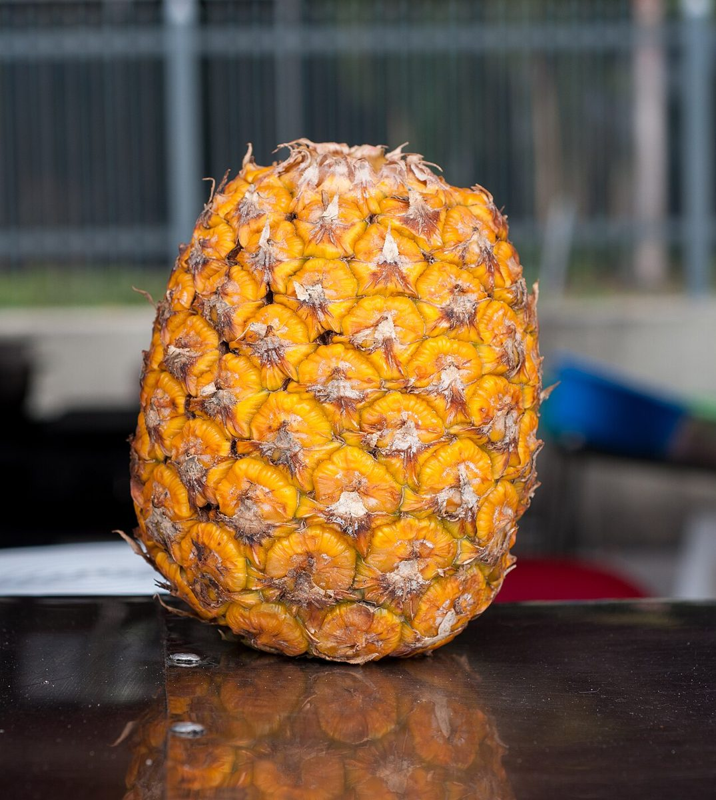
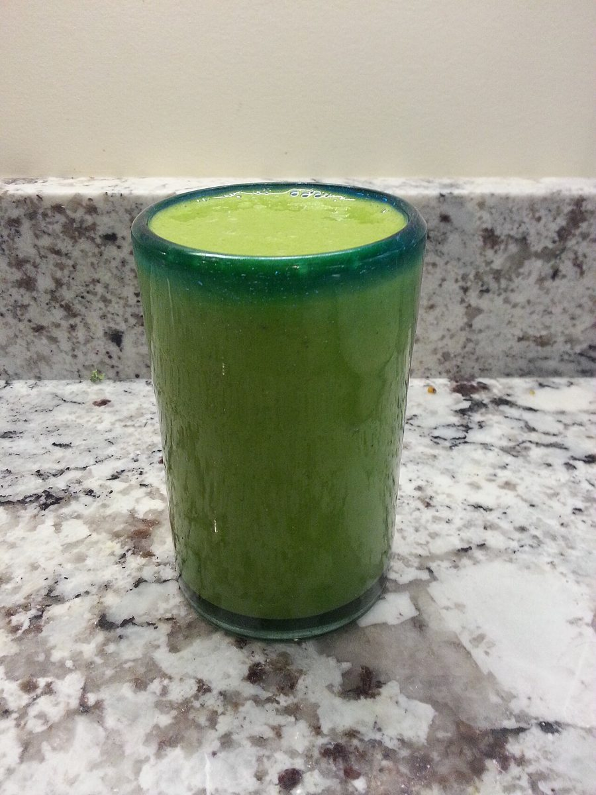
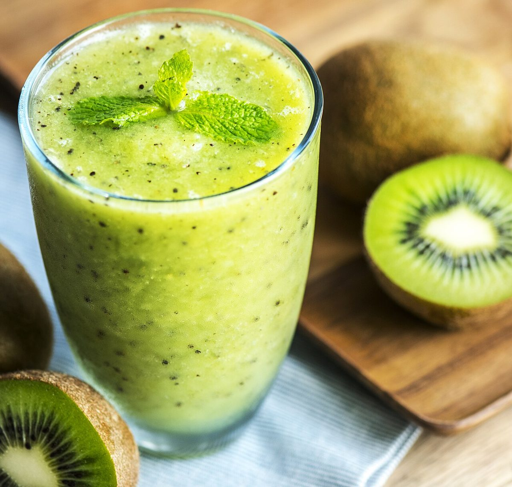

ABOUT
お店の由来と想い
Madreは、花巻駅東口からすぐの大通1丁目に、2025年4月26日にオープンしたカフェです。運営は、うに(UNI)という会社。目指したのは「母親のような温かな店」、気軽に人が集まれる場所だと、地元紙の岩手日日で紹介されています。
「母親のような温かな店」
店内は木目と吊り下げ電球のやさしい雰囲気で、テーブル席とカウンター席が合わせて約16席。おひとりでも入りやすい作りです。
※店名「Madre」の意味は公表情報では確認できていません。スペイン語などで「母」を指す言葉ですが、命名の由来は断定しません。

MENU
メニュー
看板はシャーベットのようになめらかなアサイーボウル。バナナとアサイーをベースに、オートミール、アーモンド、ブルーベリーなどをのせていただきます。ほかに、ドラゴンフルーツのピタヤボウル、スムージー、ドリンクもあります。

アサイーボウル
定番のスタンダードのほか、おすすめのMadreスペシャル、チョコザクザクなど。

ピタヤボウル
ハワイ生まれのヘルシーフード、赤いドラゴンフルーツのボウル。

スムージー・ドリンク
アサイーやピタヤのスムージー、カプチーノ、抹茶ラテ、ミルクティーなど。
準備中 価格・営業時間・定休日・テイクアウトの詳細は、最新情報の確認後に掲載します。メニューは変わることがあります。








VOICE
口コミ(イメージ例)
イメージ例
駅前でひとやすみ。ひんやりしたアサイーボウルで、歩き疲れがすっと軽くなりました。
イメージ例
店内があたたかい雰囲気で、ひとりでも気兼ねなく入れました。また来たいです。
イメージ例
トッピングたっぷりで見た目も華やか。友だちとおしゃべりしながらゆっくり食べました。
※制作側が作成した例文で、実在のお客様の声ではありません。
ACCESS
アクセス
- 住所
- 〒025-0092 岩手県花巻市大通1丁目9-27
- 最寄り
- JR花巻駅から徒歩約1分
- 電話
- 準備中
- 営業時間・定休日
- 準備中
- @madre.0301(ご連絡もこちらから)